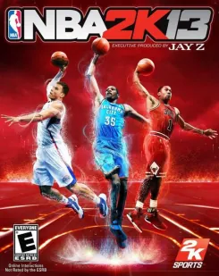
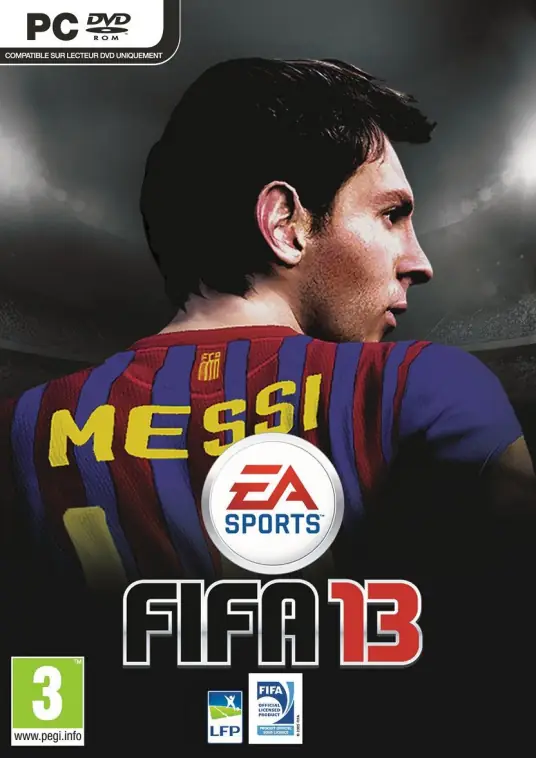

|  NBA2K系列是一系列年年开发并发布的电子篮球游戏。 从1999年开始， NBA 2K系列是对Sega Dreamcast的独家新闻。 此系列由Sega最初发行，在Sega体育之下并且由“视觉概念”开发。《NBA2K》系列游戏与EA的《NBA Live》系列一直是全球最受欢迎的两大篮球游戏，凭借出色的操作手感也赢得了大量的忠实爱好者。 |  游戏拥有超过500家授权俱乐部和15000多名球员，增强了游戏的真实性。此外，游戏还提供了多种的游戏模式，包括生涯模式、提升改进、游戏补丁、游戏攻略、键盘操作等，以及多样的原声音乐。《FIFA 13》的核心玩法包括了逼真的足球比赛体验，玩家可以通过控制球队进行比赛，体验到足球运动的激情和策略。游戏的生涯模式允许玩家扮演球员和经纪人的角色，管理职业生涯，参与转会市场，体验从一名普通球员成长为足球巨星的过程。此外，游戏还提供了多种操作技巧和防守经验。 |
| 返回目录 | |